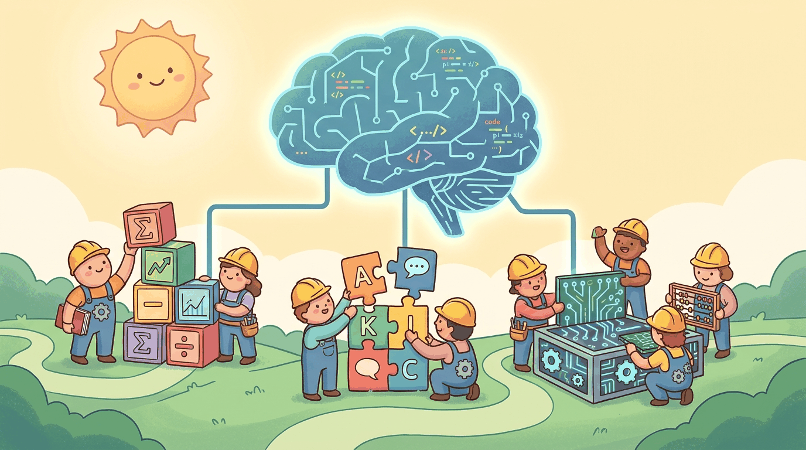

capturing the theme: Building the mathematical, linguistic, and engineering foundations that underpin every ...Part Overview
Part I establishes the core knowledge you will draw on throughout the rest of the book. We begin with machine learning and PyTorch fundamentals, then move into natural language processing, tokenization, sequence modeling, the Transformer architecture, and text generation. By the end of these six chapters, you will have a solid understanding of how text becomes numbers, how models learn patterns, and how the Transformer produces coherent language.
Chapters: 7 (Chapters 0 through 6) covering approximately 60,000 words of content with hands-on labs, worked examples, and exercises. The part closes with Chapter 6: Tools of the Trade, consolidating the PyTorch, NumPy, and tokenizer stack you will reach for in every subsequent part.
Every concept in this book rests on the foundations built here. Part I gives you the mathematical intuition, NLP building blocks, and Transformer fluency needed to understand, use, and customize large language models with confidence.
- 6.1 Platforms
- 6.2 Libraries & Frameworks
- 6.3 Datasets & Benchmarks
- 6.4 Models
- 6.5 External Reading & Communities
- 6.6 HuggingFace Hub: Sharing, Versioning, and Spaces
- 6.7 Essential Python Libraries for LLM Work
- 6.8 Virtual Environments and Dependency Management
- 6.9 Jupyter Notebooks and Google Colab
- 6.10 Common Patterns for LLM Scripting
- 6.11 Hardware Requirements for LLM Work
- 6.12 CUDA and Driver Setup
- 6.13 Linking CUDA to PyTorch
- 6.14 Installing Key Libraries
- 6.15 Cloud Compute Options
- 6.16 IDE Setup and Editor Integrations
- 6.17 Verifying Your Setup
- 6.18 Git Basics for ML Projects